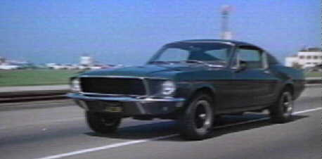

Alan
R.Trustman
Harry Kleiner
Robert
E. Relyea (executive producer)
Robert Vaughn- Walter Chalmers
Jaqueline Bisset-
Cathy
Don Gordon- Det. Sgt. Delgetti
SFPD
Robert Duvall- Weissberg (Sunshine cab driver)
Simon Oakland- Captain Sam Bennett SFPD
Norman Fell- Captain Baker SFPD
George Stanford Brown- Dr. Willard
Runtime: 113 minutes
MPAA Rating: PG
County:
USA
Language: English
Color: Color (Technicolor)
Sound mix: Stereo
Production Company: Solar Productions
Distributors: Warner-Seven Arts
Genre: Action/Crime/Mystery
McQueen and Crew
Synopsis
Detective Frank Bullitt is hired to protect a witness soon to testify against the mafia. The wealthy senator who hires Bullitt seems to be leaving out important information about the case and the man he is protecting. When the witness ends up dead, Bullitt decides to take matters into his hands.
Context Surrounding Bullitt
McQueen, who, like his character, was known as the strong-silent type,
was already established as a star and his participation in Bullitt
virtually assured the production company an audience. Once the film was released it was not
only McQueen’s presence that attracted an audience but the famous car chase
between Detective Bullitt’s Mustang and the oppositions Charger. The chase took place on the actual
streets of San Francisco; the entire film in fact was filmed on location in the
city, not in a studio. McQueen,
with his racecar driving background, did most of the stunt driving on his own,
there were only a few dangerous stunts that McQueen allowed his stunt driver,
Bud Ekins, to execute. The car
itself became an icon for car lovers.
Earlier this year Ford Motor Company manufactured the 2001 Mustang
Bullitt in remembrance of the car used in the chase sequence.
According to the
IMDb website, the film’s editing and
cinematography were acknowledged with Academy Award nominations, and
Frank Keller won the Oscar for best film editing. The film itself won the Edgar Alan Poe
Award for best film. The screenplay
was adapted from Robert L Pike’s novel, Mute Witness. Although most critics found holes in the
plot and found it confusing and rather uninspired, audiences were still enamored
with the film and its blue-eyed star.
McQueen was at the top of his game and Bullitt proved to be one of
his biggest blockbusters.
The film started the trend of tough-guy
cop movies made in San Francisco.
Bullitt is the movie that inspired Dirty Harry and 48 Hrs. Steve McQueen was actually offered the
lead role in Dirty Harry before Clint Eastwood. Bullitt also started the trend of
using ambient sounds for its soundtrack.
Sound Editor Lalo Schifrin did incorporate a jazz score in the movie,
however, it was his use of the sounds in the streets of San Francisco and the
revving and crashing of cars that changed the way sound editing was done in
future films of this kind.
 Bullitt
is also known for the controversial decisions made in its production. Bullitt was the first movie, in
mainstream release, to make use of profanity in its main dialogue. The films casting department made an
unusual choice in casting an African-American, George Stanford Brown, as the
emergency room doctor. Casting
Brown as the doctor in charge of a major hospital, helped begin the break down
of color barriers in Hollywood.
Bullitt
is also known for the controversial decisions made in its production. Bullitt was the first movie, in
mainstream release, to make use of profanity in its main dialogue. The films casting department made an
unusual choice in casting an African-American, George Stanford Brown, as the
emergency room doctor. Casting
Brown as the doctor in charge of a major hospital, helped begin the break down
of color barriers in Hollywood.
Bullitt is a film that
made audiences and critics look past the confusing story and pay attention to
specific sequences and editing. The
film started trends in uses of ambient sounds and cop movies shot on
location. Bullitt was a
showcase for Steve McQueen and his brooding personality, and ended up being one
of the films he is best known for. Through its use of language and controversial
casting choices, Bullitt is one of the early films that challenged the
way people looked at Hollywood.
First picture, 1968 Mustang Bullitt--Second picture, 2001 Mustang Bullitt
Critique and Plot Summary of Peter Yates' Bullitt
 First of all, the basic plot of Bullitt is a UNIVERSAL theme of
the strong and charismatic cop trying to overcome the cynical and immoral
criminal. Although the theme is
UNIVERSAL, the plot had been worn-out by the film’s release in 1968. This made the film predictable. Bullitt could even be described
as a western in cars.
However, even though the plot was similar to former action films, its
intensity made it a forerunner for future tough-guy films such as Dirty
Harry.
First of all, the basic plot of Bullitt is a UNIVERSAL theme of
the strong and charismatic cop trying to overcome the cynical and immoral
criminal. Although the theme is
UNIVERSAL, the plot had been worn-out by the film’s release in 1968. This made the film predictable. Bullitt could even be described
as a western in cars.
However, even though the plot was similar to former action films, its
intensity made it a forerunner for future tough-guy films such as Dirty
Harry.
Even
though the content of the film seemed to be lacking, the editing was advanced
for its time. This film was noted
as the first to fully capture the intensity of a high-speed car chase. In the film, Frank Bullitt pursues the
murders through the streets of San Francisco in his fast Mustang. This car is both a LEITMOTIF and
a SYMBOL of Frank’s strength.
The chase is a high point of the film and lasts a full 8 minutes. The POINTS OF VIEW during
this scene are both SUBJECTIVE and INDIRECT-SUBJECTIVE. While sitting back and viewing the film,
the audience is placed not only in the driver’s seat, but also in the back seat
of the cars. A more
INDIRECT-SUBJECTIVE look is expressed through a close up of the drivers’
faces and hands. These cinematic
techniques put the audience in the car with Frank Bullitt.
Just
as the editing adds to the scene, the usage of AMBIENT SOUNDS relays a
realistic touch to the chase itself.
A score is not used to intensify the car chase from the streets of San
Francisco to the countryside. Instead, the actual revving of the cars engine is
the only sound heard. At this time,
no other films had used realistic noises while cars were in pursuit of each
other. In 1969, Bullitt was nominated for an Academy
Award for Sound. This cinematic
statement proved to take an ordinary film and turn it into a critically
acclaimed motion picture.
Although sound seemed to aid in
the film’s success, the lack of sound added to the character’s roles. McQueen portrayed Frank Bullitt in a
compelling but silent manner. With
McQueen’s intense, blue eyes he was the perfect
candidate for this more muted role.
He illustrated Frank as a more subtle and non-verbal man, who expressed
his thoughts through eye contact and facial expressions rather than through
intense dialogue.
Although obviously successful, Bullitt leaves the audience with much to be desired. The best part of the film was the acclaimed 8-minute car chase. But because McQueen successfully emerges as Frank Bullitt and the performance of the supporting cast is excellent, the film is a success. Overall, the cast and cinematic advances throughout Bullitt override the need for an original plot.
Steve McQueen was known for his intense eyes.

Information for this website came from these links.
http://people.freenet.de/pony/bon.htm (facts on the Bullitt Mustang)
http://www.norcalmovies.com/Bullitt (pictures of the cast on location in San Francisco)
http://www.stangnet.com/ (information on 2001 Mustang Bullitt)
http://www.bbc.co.uk/films/2001/03/02/bullitt_1968_review.shtml (review and prod. info)
England Poster
1.
Bullitt is best known for its 8-minute car chase. Compare and contrast this chase through
the streets of San Francisco to today’s cinematic high-speed car chases.
2.
In
1969, Bullitt was nominated for an Academy Award for best sound in
a film. How did the lack of a score
and the more muted persona of characters aid in mood of the film?
3.
The
film was critically acclaimed for editing and sound. However, how does the often-used plot
detract from the films cinematic achievements?
4.
Although
the cast includes a list of credible actors, Yates' overall development of each
character is inadequate. Compare
and contrast how their lack of development affected Bullitt as a
whole.
5.
At
the time Yates produced Bullitt racial discrimination was rampant in our
country. Discuss Yates timely use
of racial overtones in this film.
Created By: Katie Lange and Ann Lund
Submitted : December 3, 2001